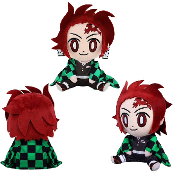
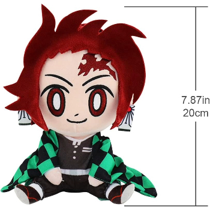
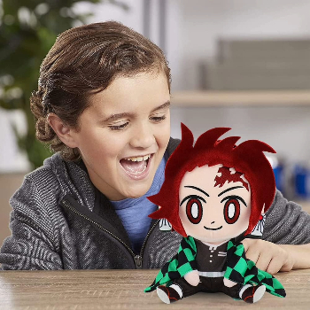

Peluche de Tanjiro Kamado - Demon Slayer
14,99€
Tanjiro Kamado, un personaje icónico de la serie de manga y anime Demon Slayer: Kimetsu no Yaiba, es un adolescente valiente y decidido.
Su historia es una búsqueda desgarradora para restaurar la humanidad de su hermana Nezuko, quien se convirtió en un demonio después de un trágico ataque que acabó con la vida de su familia,
dejándolo como el único superviviente.
Este peluche de 20cm de altura es un tributo perfecto para los fanáticos de Demon Slayer,
y su suavidad lo convierte en el compañero perfecto para abrazar.
¡Agrega a Tanjiro a tu colección hoy y mantén viva la llama de la lucha contra los demonios!